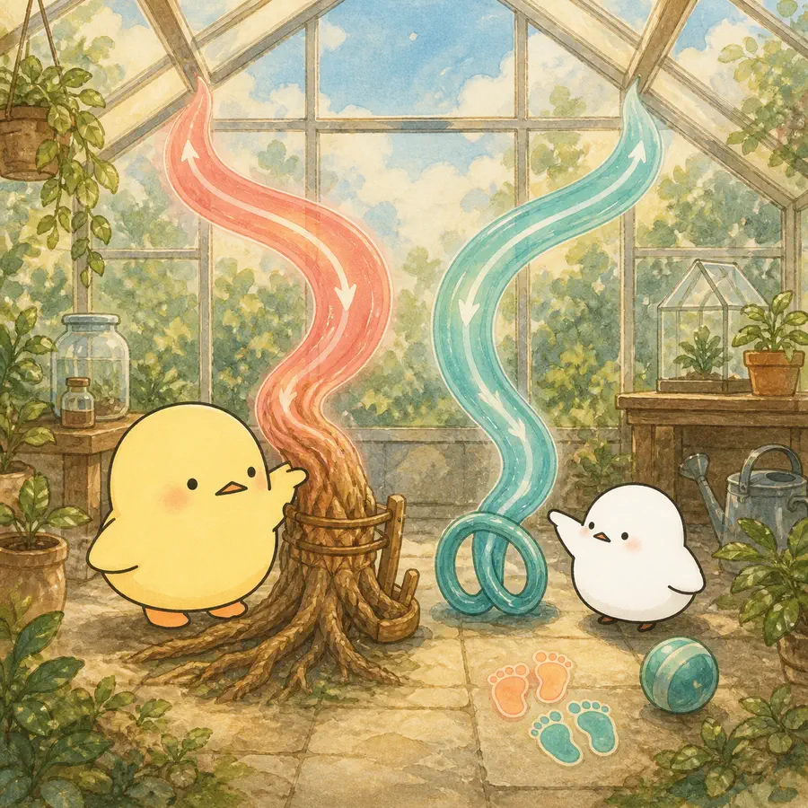
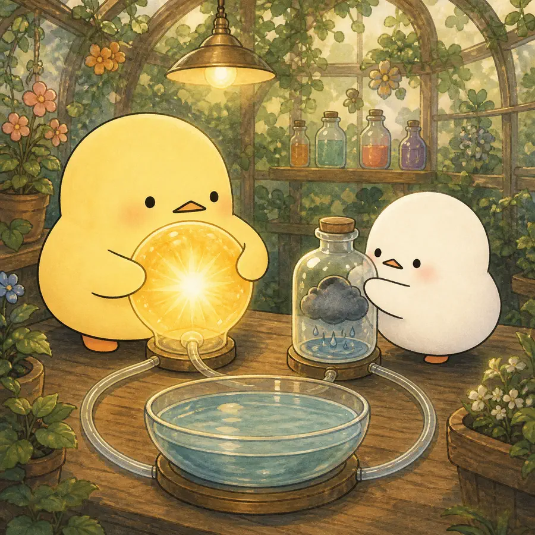
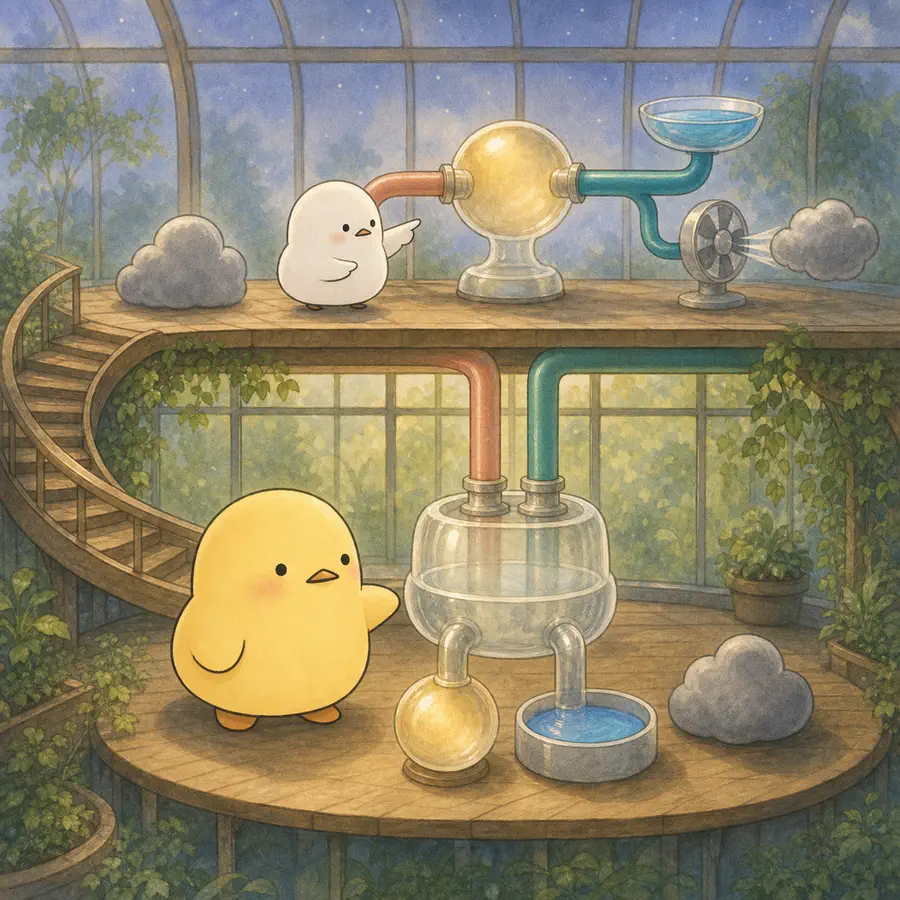
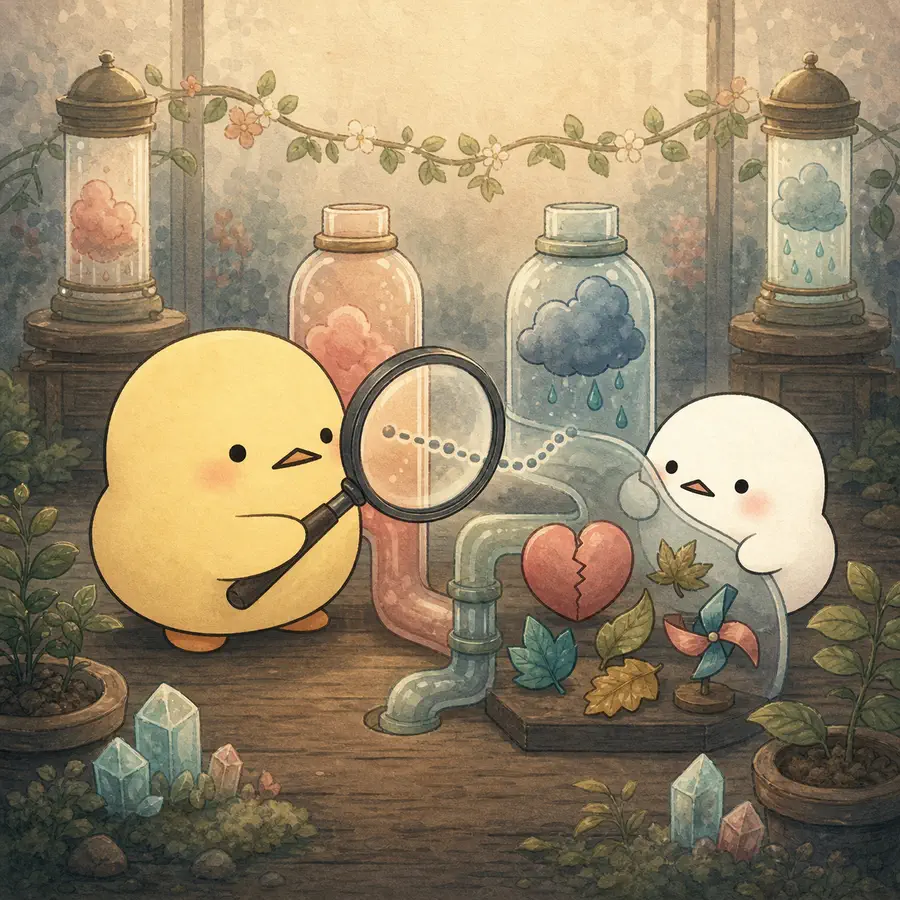

ILLUSTRATED OVERVIEW
친구와 가족 활동은 안녕감에 똑같이 작용할까?
누구와 활동했는지에 따라 안녕감의 세 측면이 어떻게 달라졌는지, 중년과 노년의 결과를 마음 날씨로 나누어 봅니다.
옆으로 넘겨 4컷 보기
-

가족과 친구 관계는 모두 중요하지만 구조와 주된 기능이 다를 수 있다.
-

긍정정서, 부정정서, 삶의 만족도는 서로 다른 결과변수다.
-

중년에는 관계 원천 차이가 없었지만, 노년에는 친구 활동이 삶의 만족도와 부정정서에서 구별됐다.
-

두 시점 자기보고의 예측관계는 가족 활동의 인과효과나 관계의 질을 확정하지 않는다.